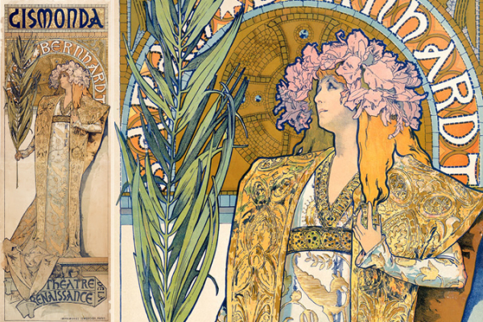
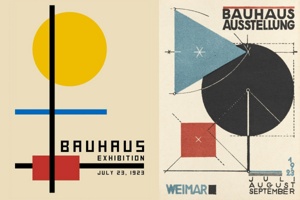
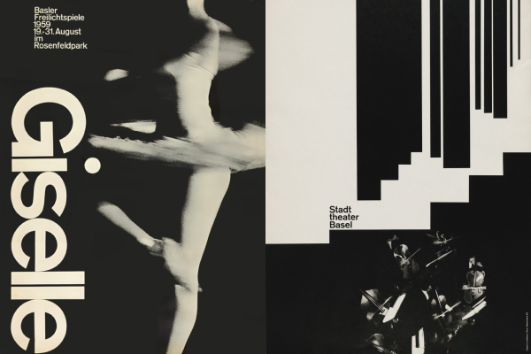

Навигация по странице: Введение | Стили и направления | Сводная таблица
Плакат — это лаконичное, броское изображение с кратким текстом, созданное для привлечения внимания зрителя с большого расстояния. Зародившись во второй половине XIX века благодаря изобретению многоцветной литографии Жюлем Шере, плакат быстро превратился из утилитарной уличной афиши в самостоятельный и влиятельный вид графического искусства.
На протяжении полутора веков плакат служил зеркалом эпохи: он отражал технологические прорывы, эстетические революции, рекламировал потребительские товары, театральные премьеры и транслировал мощные социальные и политические идеи. Его главная особенность — мгновенность восприятия: у художника есть всего несколько секунд, чтобы зацепить взгляд прохожего и донести визуальное послание.
Эволюция плаката неразрывно связана со сменявшими друг друга художественными течениями:
Период расцвета декоративности, превративший европейские улицы в бесплатные художественные галереи. Основоположники стиля воспевали природную пластику и чувственность.
Революционный отказ от украшательства в пользу функциональности, индустриального ритма и лаконичности. Плакат стал инструментом проектирования нового мира.
Вершина рационального графического дизайна, заложившая стандарты современной верстки, логотипов и интерфейсов.
Краткая сводная характеристика основных этапов развития плакатного искусства:
| Направление | Характерные черты | Пример | Подробнее |
|---|---|---|---|
| Ар-нуво (Модерн) | Плавные растительные орнаменты, романтизированные женские образы, пастельные тона, богатые виньетки. |  |
Статья о модерне |
| Конструктивизм | Геометрия, диагональная динамика, фотомонтаж, контраст черного и красного, рупорная типографика. |  |
Статья о конструктивизме |
| Швейцарский стиль | Математическая сетка, шрифт Helvetica, асимметрия, эмоциональная сдержанность и ясность. |  |
Статья о швейцарском стиле |